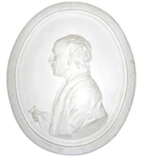

<!DOCTYPE html>
<!--[if lt IE 7]>      <html class="no-js lt-ie9 lt-ie8 lt-ie7"> <![endif]-->
<!--[if IE 7]>         <html class="no-js lt-ie9 lt-ie8"> <![endif]-->
<!--[if IE 8]>         <html class="no-js lt-ie9"> <![endif]-->
<!--[if gt IE 8]><!--> <html class="no-js"> <!--<![endif]-->
    <head>
        <meta charset="utf-8">
        <meta http-equiv="X-UA-Compatible" content="IE=edge,chrome=1">
        <title></title>
        <meta name="description" content="">
        <meta name="viewport" content="width=device-width, initial-scale=1">

        <link href='http://fonts.googleapis.com/css?family=Open+Sans:400italic,600italic,700italic,400,600,700&subset=cyrillic,latin' rel='stylesheet' type='text/css'>

        <link rel="stylesheet" href="css/normalize.min.css">
        <!-- <link rel="stylesheet" href="css/main.css"> -->

        <script src="js/vendor/modernizr-2.6.2.min.js"></script>

        <link rel="stylesheet/less" type="text/css" href="less/styles.less" />
        <script>
          less = {
            env: "development"
          };
        </script>
        <script src="js/vendor/less.min.js"></script>
        <script>less.watch();</script>
    </head>
    <body>
        <header>
            <section id="nav-top">
                <nav>
                    <a href="#" id="live">Летний дворец LIVE</a>
                    <a href="#">Ресторан</a>
                    <a href="#">История</a>
                    <a href="#">Команда</a>
                    <a href="#">Контакты</a>
                    <a href="#">Услуги и цены</a>
                <aside class="social">
                    <a href="#" class="fb"></a>
                    <a href="#" class="in"></a>
                    <a href="#" class="tw"></a>
                    <a href="#" class="vk"></a>
                </aside>
                </nav>
            </section>
            <hr>
            <section id="head-mid">
                <div class="phone">
                    <div class="phone">+7 (812) 324 45 45</div>
                    <a href="#" class="callmeback">заказать обратный звонок</a>
                </div>
                <div class="logo-big">
                    <a href="#" class="logo-big"></a>
                </div>
                <div class="locate">
                    <div class="locate">Санкт-Петербург, Петродворец, <br>Петербургское шоссе, д 130, к. 7 </div>
                </div>
            </section>
            <section id="nav-mid">
                <nav>
                    <a href="#">Банкеты</a>
                    <a href="#">Свадьбы</a>
                    <a href="#">Праздники</a>
                    <a href="#">Кейтеринг</a>
                    <a href="#" class="agency">Для агентств</a>
                </nav>
            </section>
            <section class="breadcrumbs">
                    <a href="#">Главная</a>
                    <a href="#">Не совсем главная</a>
                    <a href="#">Совсем не важная</a>
                    <a href="#">Сюда не ходи</a>
            </section>
        </header>

        <main>
            <h1 class="outlined"><span>H1 Праздники в Летнем Дворце</span></h1>
            <article>
                <figure class="right">
                     <p></p>
                    <figcaption>Антонио Риналди</figcaption>
                </figure>
                <p class="big separator-bottom">
                    Мы умеем создавать впечатления и радовать гостей. Восхищение и удивление, замирание сердца и предвкушение чуда, триумф и наслаждение. 
                </p>
                <p>
                    Мы умеем создавать впечатления и радовать гостей. Восхищение и удивление, замирание сердца и предвкушение чуда, триумф и наслаждение... Хочется чего-нибудь такого, чего еще не было? Тогда это определенно к нам!
                </p>
                <p>
                    Мы умеем создавать впечатления и радовать гостей. Восхищение и удивление, замирание сердца и предвкушение чуда, триумф и наслаждение... Хочется чего-нибудь такого, чего еще не было? Тогда это определенно к нам!
                </p>

                <section class="center separator-bottom">
                    <h2>H2 Летний дворец — уникальный проект</h2>
                    <p>
                        Летниц Дворец способен обеспечить высочайший уровень проведения мероприятия любого масштаба. Мы проводим мероприятия неизменно высокого класса для разного количества людей. Эту мысль желательно раскрыть в паре абзацев. Ниже пойдет мозаика из тезисов, поясняющих, что именно делает Летний Дворец столь классным. 
                    </p>
                </section>

                <table class="featured">
                    <tr>
                        <td class="d1">
                            <h6>Уникальная площадка</h6>
                            
                            <p>Сочетание классических интерьеров и современных технических возможностей выгодно отличают Летний Дворец от большинства других исторических площадок города.</p>
                        </td>
                        <td class="d2">
                            <h6>Изысканные интерьеры</h6>
                            
                            <p>Изысканное внутреннее убранство Летнего Дворца — тонко выполненная стилизация с использованием традиционных технологий и материалов — мрамора, бронзового литья.</p>
                        </td>
                    </tr>
                    <tr>
                        <td class="d3">
                            <h6>Высокие технологии</h6>
                            <p>К услугам гостей: стационарная сцена, регулируемая по высоте, большой проекционный экран, система затемнения black-out, <strong>Более полутора лет ушло на изготовление барочных люстр и скульптур Марса.</strong></p>
                            <p>Парадный вход Розового зала украшен лепной группой Путти по мотивам Шумакера-старшего (из собрания слепков Музея Виктории и Альберта, Лондон). Весь декор потолков Дворца соотносится со стилистикой лепного декора в стиле Антонио Ринальди (интерьерная декорация Китайского Дворца, Гатчинского дворца, Мраморного дворца в Санкт-Петербурге) и украшен искусной репродукцией плафона Китайского Дворца «Торжество Венеры» кисти Торелли. </p>
                        </td>
                        <td class="d4">
                            <h6>Концертное оборудование</h6>
                            <p>Парадный вход Розового зала украшен лепной группой Путти по мотивам Шумакера-старшего (из собрания слепков Музея Виктории и Альберта, Лондон). Весь декор потолков Дворца соотносится со стилистикой лепного декора в стиле Антонио Ринальди (интерьерная декорация Китайского Дворца, Гатчинского дворца, Мраморного дворца в Санкт-Петербурге) и украшен искусной репродукцией плафона Китайского Дворца «Торжество Венеры» кисти Торелли. В интерьере дворца использованы оригинальные вазы из «Катальной горки» в Ораниенбауме, бра из Орловского зала Гатчинского дворца.</p>
                            <p>Большой вклад в убранство Летнего Дворца внесли известные скульпторы: <strong>Павел Игнатьев и Денис Прасолов</strong> — авторы скульптурной композиции портала Дворца, Владислав Маначинский — кариатиды его работы обрамляют входы в фойе.</p>
                        </td>
                    </tr>
                </table>

                <div class="pagenum">
                    <span>4</span>
                </div>
                <h2>H2 Сервис</h2>
                <figure class="left">
                    <p class="person"></p>
                    <figcaption>
                        <h6>H6 Константин Констанович Константинопольский</h6>
                        Что этот нигер себе позволяет?
                    </figcaption>
                </figure>
                <p><strong>Сервис, который вам предложат в Летнем Дворце, поистине высочайшего качества. И еще несколько вступительных слов о сервисе.</strong></p>
                <div class="quote bubble-left">
                    <p>Царская сабака или воздушные Элтона Джона с ароматным Элтона Джона в изысканных интерьерах Элтона Джона, концерт симфонического Элтона Джона или выступление Элтона Джона, детский Элтон Джон или собрание акционеров солидного Элтона Джона. На территории Элтона Джона можно реализовать любую творческую и организационную Элтона Джона.</p>
                </div>
            </article>
        </main>

        <footer>
            
        </footer>        

        <script src="//ajax.googleapis.com/ajax/libs/jquery/2.1.1/jquery.min.js"></script>
        <script>window.jQuery || document.write('<script src="js/vendor/jquery-2.1.1.min.js"><\/script>')</script>
        <script src="js/main.js"></script>
    </body>
</html>
